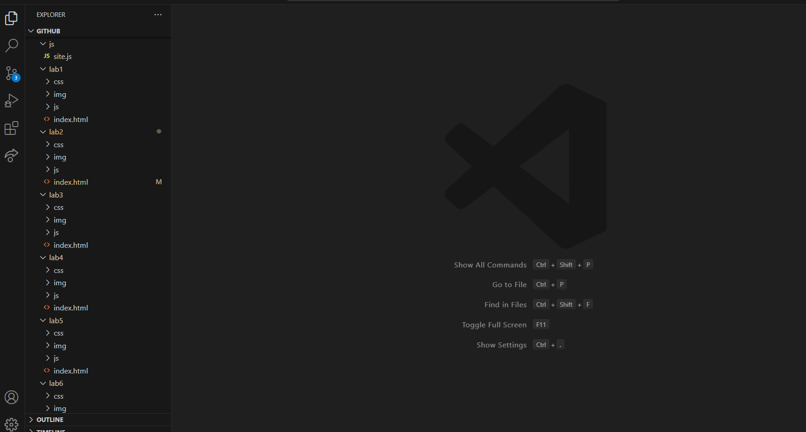

Lab 3 - File Structure and File Transfer
Challenge
The challenge for the lab is to create a file structure that is neat and organized. We also need to create a homepage with the links to our labs on it and some information about ourselves.
Problems
Problems mostly arose when I was trying to create the CSS for my homepage. I wanted to make sure I was happy with how my website looked so I tried to implement some formatting that I didn't necessarily know how to do. Specificially, I didn't know how to have an image and text side by side. Luckily, W3schools saved the day again and so the CSS I used was taken from there.
Reflection
This assignment was nice to help flesh out my homepage because it was just a mess before this. I had just been messing with it, adding features as we would go through new things in lecture. I felt the same way I would when creating a piece of art with a sense of satisfaction at the end.
Results
My file structure is shown in the image below and my index.html will also be linked
Index.html 